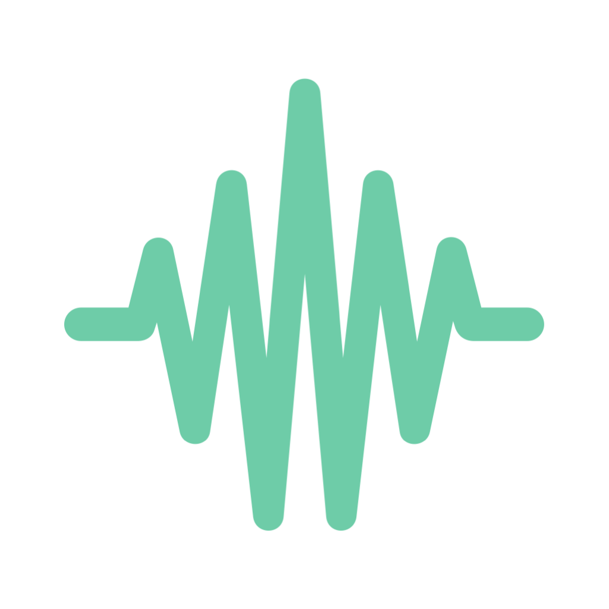

1top작게 보일 때1top
Your AI work.
In view.
흩어진 AI 작업,
한눈에 보이게.
어떤 AI가, 어디서, 얼마나 쓰고 있는지.
세션과 사용량을 한곳에서 확인하세요.
사용량 · 세션● 실시간
1,018,240
최근 1시간 · tokens58.2%
5시간 사용 한도Claude CodeCursor · Frontend
1,208 tok/s구분 확인 · 숫자 1 / 소문자 l / 대문자 I
1 l I · 0 O · 578
뚜렷한 숫자 1, 기술적인 인상.
로고의 1을 강조하고 계측 도구의 성격을 살리는 방향.
로고의 1을 강조하고 계측 도구의 성격을 살리는 방향.